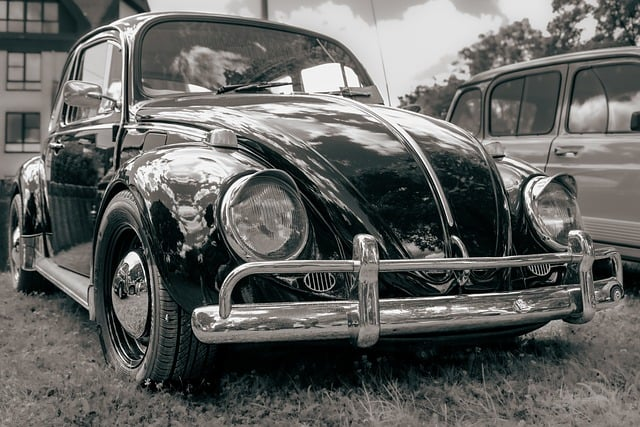

Aims
CSS-GRID and JS media interactions
- add media elements to our website: image, video and audio CSS-GRID and JS media interactions
on html
- Connect our audio or video to controls with js
for customisation
- Style our website with CSS-GRID - style system
this wil get so fun we just can't stop!
